TVV RESEARCH DIGEST — October 28, 2026 — 12 desks
1. Major Geopolitical Conflict Developments
- ★ Israel election, partial count: with 84% of ballots counted, Netanyahu's bloc holds 54 seats, short of the 61 needed, while Eisenkot's Change bloc has 49 and the Arab parties 17. Likud leads with 27 seats, Yashar has 22 and Bennett's Together 12. Together the opposition and Arab parties would reach 66, but most of the Change bloc has ruled out a Jewish-Arab coalition. The count is partial; double-envelope ballots, including soldiers' votes, are counted later. Guardian live (84% counted) · Times of Israel (72% counted)
- ★ Israel exit polls vs count (conflicting): BBC reports that exit polls had the blocs tied at 51-51; Channel 12 had 52-49 and Channel 14 gave Netanyahu's bloc 60. Partial official counts have since moved toward Netanyahu's bloc (54 at 84% counted). Turnout was 77.7%, the highest since 1999. Joint List chair Jabareen says he is ready to help oust Netanyahu; Eisenkot's conditions effectively exclude the Arab parties, and Netanyahu calls such a partnership treasonous. The final results are expected around Nov 4. BBC
- ★ Ukraine overnight Oct 27-28: Russia fired one Iskander-M/S-400 missile and 88 drones, and 71 were downed or jammed. In Kharkiv a fire injured 5 people, including a 4-year-old. Ukrainska Pravda · LB.ua
- Oleshky truce update: the local ceasefire in occupied Oleshky (Kherson) has entered its 30th hour "without a single incident". It runs until Nov 1. Russian strikes elsewhere in Ukraine killed 2 and injured 17 over the past day. Kyiv Independent
- ★ Iran war: Trump told a Lubbock, Texas, rally on Oct 27 that the war will end "whenever I want it to end". The Hill reports a CENTCOM estimate (Oct 16) of $47 billion for the war's cost. Reuters/Ipsos has Trump's approval at 32% ahead of the Nov 3 midterms. CNBC
- ★ Hormuz (conflicting claims): Iran's navy says a tanker hit naval mines east of the strait and caught fire. No independent verification has been found, and gCaptain reports that evidence for Iran's mine-strike claims remains elusive. AIS tracking showed only 2 commercial crossings on Oct 28 as of 11:24 UTC and a 7-day average of 5.9 a day, against a pre-crisis 84.8. That contrasts with US claims of 13-14 million b/d moving under escort, reported by Kurdistan24. AIS counts miss vessels running dark. Anadolu · Iran International · gCaptain · hormuz.now AIS traffic · GlobalSecurity (Kurdistan24 report)
- ★ Sudan: a Sudanese army (SAF) drone strike on a busy market in Nyala, South Darfur, on Oct 26 killed at least 36 people, according to MSF. The National
- Houthi-Saudi front (conflicting claims): the Houthis say they hit Saudi Aramco's Ras Tanura refinery with a ballistic missile on Oct 27. No Saudi confirmation of a hit or damage was found by build time. Al-Monitor · Reuters via Investing.com
2. Major Terror / Security Incidents
- ★ Belgrade: a minor shouting "Allahu Akbar" attacked a gendarme guarding Israel's embassy with two knives early Wednesday and was shot dead. The officer had a minor face wound. Interior Minister Ivica Dacic said the attacker was a Serbian citizen monitored as a known Islamic State supporter and raised Serbia's terrorism threat level to red, the highest. The embassy was closed and no staff were hurt. It is the second attack on the embassy since a June 2024 crossbow attack. BBC · AP · Serbian government
- Pakistan: security forces killed 13 militants in Balochistan and 3 in Khyber Pakhtunkhwa on Oct 26, and one civilian was killed in a drone attack, according to the SATP daily log. SATP Oct 27 update
- ★ Cyber, UNM Health update: University of New Mexico Health systems are coming back online after Monday's cyberattack, which disrupted patient care and surgeries. BleepingComputer reports a ransomware claim of 36,000 affected systems, which UNM has not confirmed. KRQE · BleepingComputer
- Cyber, GMO update: Japan's GMO Internet issued a tenth incident report on the Onamae breach and urged affected customers to shut down their PCs amid a ransomware threat. GMO Internet · BleepingComputer
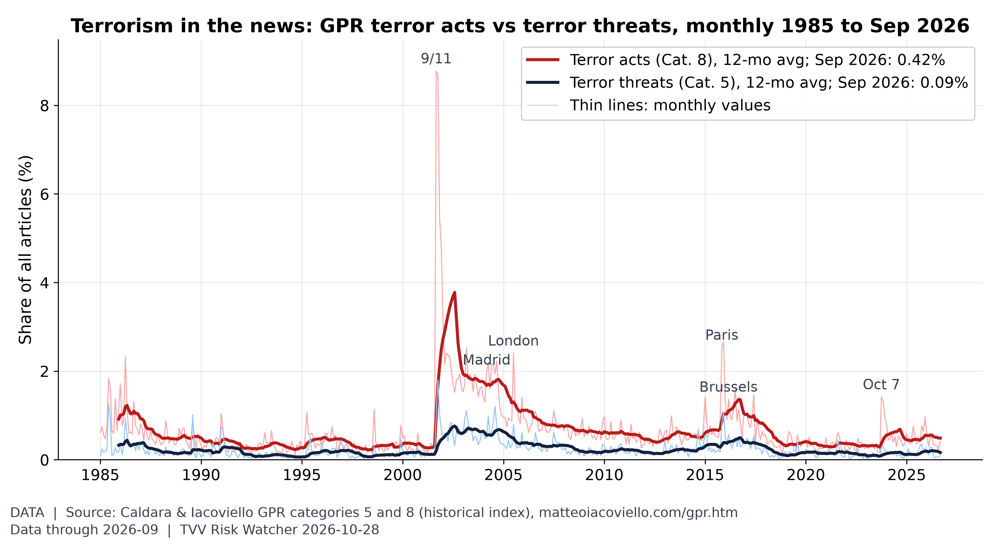
Terror acts vs terror threats. In September 2026, terror-act articles were 0.42% of all articles (2025 average 0.55%) and terror-threat articles 0.09% (2025 average 0.19%), far below the 9/11 peak of 8.8%. [Data; data as of 2026-09 (monthly; held: next update early Nov)] Source: matteoiacoviello.com data page
3. Earthquakes and Eruptions
- No qualifying quake: no M6.0+ earthquake with significant casualties or damage since Oct 22. The latest M6+ was an M6.0 214 km NW of Port-Olry, Vanuatu (Oct 28, 02:21 UTC), with a green PAGER alert and no damage reported. USGS map
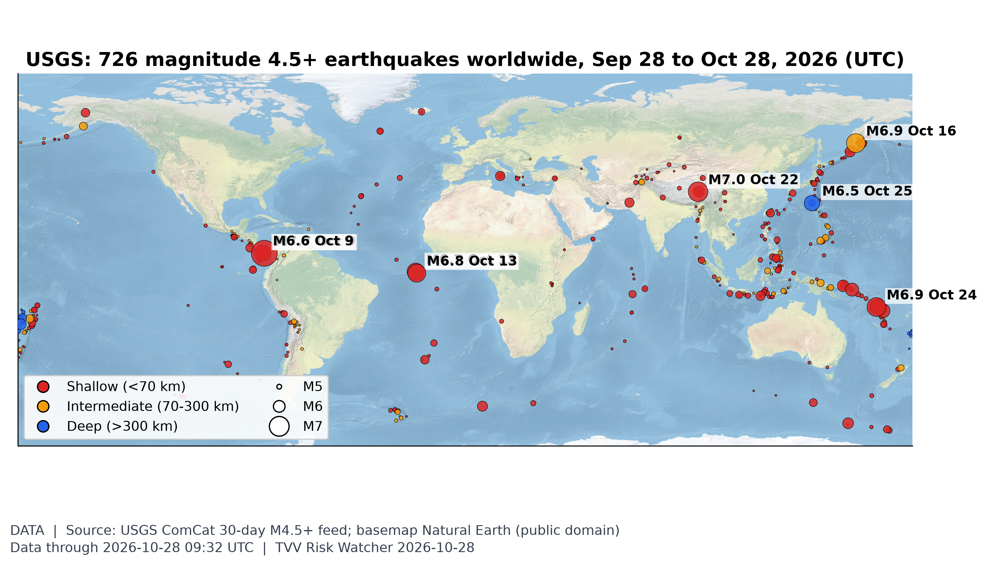
Where the earth shook this month. USGS logged 726 M4.5+ quakes in the 30 days to Oct 28, 18 of them M6+; the largest was M7.7 12 km WSW of Pitaloza Arriba, Panama on Oct 9 (UTC). [Data; data as of 2026-10-28 09:32 UTC (USGS 30-day M4.5+ feed, pulled ~7:10 AM ET Oct 28)] Source: earthquake.usgs.gov data page
4. Solar / Space Weather
- Space weather quiet: SWPC expects a maximum Kp of 2.33 for Oct 28-30, with no G1 storms and a 1% chance of S1 radiation storms. A filament eruption on Oct 26 is expected to pass mostly behind Earth, with at most a glancing influence late Oct 30-31. The >2 MeV electron flux peaked at a high 1,790 pfu on Oct 27. SWPC 3-day forecast · SWPC discussion
- Standing watch, geomagnetic pole drift: the measured north magnetic pole drift toward Siberia and the long-term weakening of the field continue, as tracked in NOAA/NCEI pole-position data and the World Magnetic Model. No one can predict when a geomagnetic excursion would occur. Michael Hentschel's view: no excursion before 2035 at the earliest, with critical earth changes along the way. NOAA NCEI wandering poles · World Magnetic Model
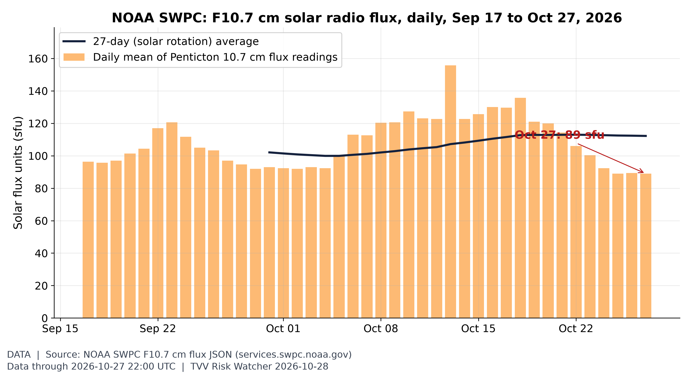
Solar activity proxy: F10.7 flux. The 10.7 cm solar radio flux, a standard proxy for solar activity and upper-atmosphere drag on satellites, was 89 sfu on Oct 27 (27-day average 112; window range 89-156). [Data; data as of 2026-10-27 22:00 UTC (latest Penticton reading)] Source: swpc.noaa.gov data page
5. Critical Infrastructure / Transportation Disruptions
- ★ Shipping advisory: JMIC Advisory Note 016-26 (Oct 28), "Blockade Enforcement", rates the threat SEVERE. Neutral vessels near the US blockade of Iran may face visit and search, should keep a VHF Channel 16 watch and should plan for extra transit time. JMIC Advisory Note 016-26
- ★ Bangladesh grid failure: on Oct 27 national generation fell 5,370 MW in an hour, from 14,719 MW at 12:00 to 9,349 MW at 13:00, after a failure at Meghnaghat. Gas-fired output fell 60.4% and coal 39.4%, cutting power across eastern Dhaka, Chattogram and Sylhet. The cause had not been established; recovery was expected by about 10 p.m. The Business Standard
- ★ US fuel prices: EIA's Oct 26 survey shows retail diesel at $6.352 a gallon, up from $6.276 a week earlier and $6.179 on Oct 12, while regular gasoline eased to $4.269 from $4.284. EIA's weekly petroleum report for the week to Oct 23 is due at 10:30 a.m. ET, after this build. EIA Gasoline and Diesel Update · EIA Weekly Petroleum Status
- Ras Tanura (550,000 b/d), the Houthi claim: oil rose on Wednesday partly on the Houthi claim of a missile hit on Saudi Arabia's largest refinery. Any operational impact is unconfirmed; see the GEO item on the Houthi-Saudi front. CNBC oil · Al-Monitor
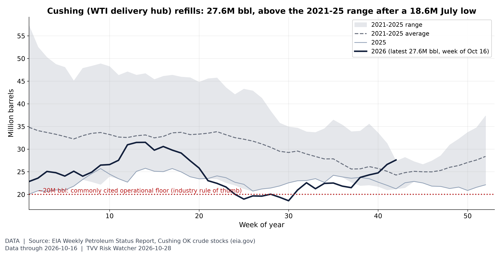
Cushing swings from tank bottoms to a glut. Crude stocks at Cushing, the delivery point for NYMEX WTI futures, were 27.6M barrels in the week to Oct 16, vs a 2021-25 average of 24.3M for that week (range 21.2-27.3M, so above the five-year high); the 2021-26 low was 18.6M (Jul 24, 2026). EIA's report for the week to Oct 23 is due 10:30 AM ET today, after this build. The 20M-barrel floor is an industry rule of thumb, not an EIA figure. [Data; data as of 2026-10-16 (weekly; EIA report of Oct 21; next 10:30 AM ET Oct 28)] Source: eia.gov data page
2026-10-16 (weekly; EIA report of Oct 21; next due Wed Oct 28)] Source: eia.gov data page
6. Econo-Metrics
- ★ FOMC today, pre-decision only: the Fed announces at 2 p.m. ET and Chair Warsh speaks afterward. CME FedWatch shows a 90.6% chance of holding at 3.75-4.00% and 76.5% for a hike in December. LSEG data show markets pricing at least three hikes by late 2027. Before the open the 10-year yield was 5.013%, the 2-year 4.749% and the 30-year 5.32%. Q3 GDP is due Thursday (expected 3.2%). CNBC Treasurys · Reuters via Investing.com
- ★ Hawkish-hold risk: Evercore and other strategists are bracing for a hawkish hold today, on the same day Microsoft and Alphabet report. Their combined capex with Amazon is running at up to $600 billion. CNBC Morning Squawk · Investing.com
- ★ RBNZ split: New Zealand's central bank held its cash rate at 2.75% on a 4-3 vote; Conway, Gourley and Silk wanted a 25 bp hike. Q3 CPI was 3.7% and is forecast to reach 4.4% in Q4. The committee said financial-stability risks had risen partly because of "opaque and complex financing arrangements for some AI investments". RBNZ · RNZ
- ★ UK budget today (12:30 GMT, 8:30 a.m. ET): Bloomberg reports that the bank surcharge will rise from 3%, but only temporarily and to less than 8%. NatWest and Lloyds rose 2.4% and Barclays 2.3%. Gas standing charges are to end, a cash-ISA cut has been scrapped and £20bn is going to PuFins. The 10-year gilt yield was 5.367% and the 30-year 5.769%, and sterling was at $1.3288 after four straight falls. On Tuesday the UK sold five-year debt at the highest cost since 2008. Guardian business live Oct 28 · Guardian business live Oct 27
- Oil Wednesday (quotes differ by time): CNBC quoted Brent at $114.68 and WTI at $101.32. Around 5 a.m. ET Brent topped $116 ($116.13, +1.98%) and WTI was $102.11 (Yahoo/Stocktwits); the Guardian cited $115.40. Traders cite the Ras Tanura claim and Hormuz fears. CNBC oil · Yahoo/Stocktwits
- War costs: Moody's Mark Zandi estimates the Iran war has cost the average American family about $2,000. CNBC
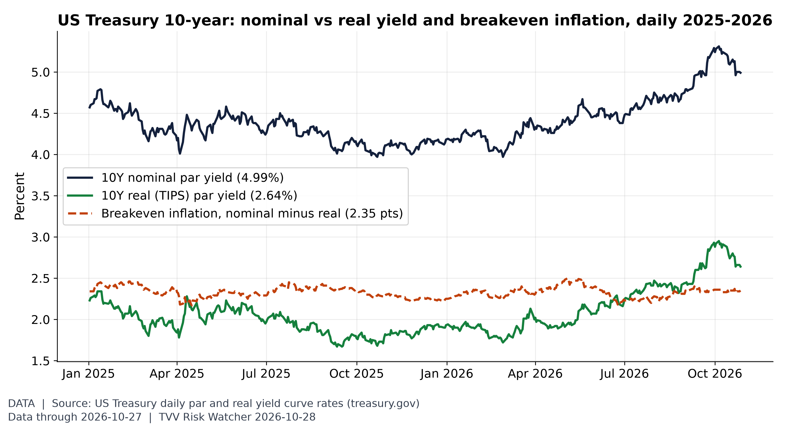
Inflation expectations in the bond market. On Oct 27 the 10Y par yield was 4.99% and the 10Y real (TIPS) yield 2.64%, a breakeven of 2.35 points (2026 range 2.18-2.50). Breakeven also carries an inflation-risk premium. [Data; data as of 2026-10-27 (Treasury daily par and real yield curves)] Source: home.treasury.gov data page
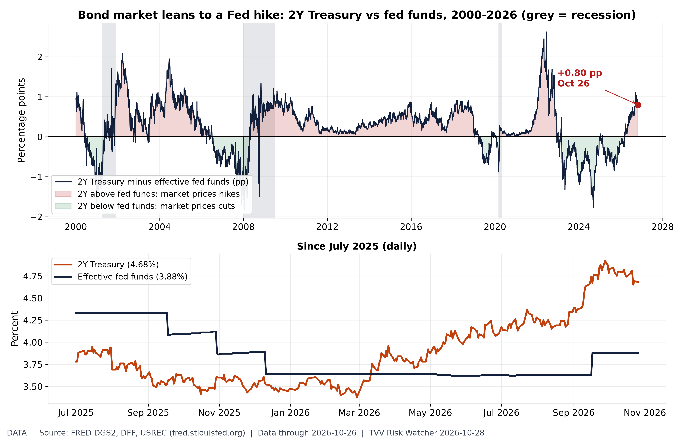
The 2-year yield says hikes are coming. Before today's FOMC decision the 2-year Treasury yield (4.68%, Oct 26) sat +0.80 pp vs the effective fed funds rate (3.88%); last this high on Sep 25, 2026. 12-month range of the gap: -0.65 to +1.11 pp. A positive gap means the market prices a higher policy rate over the next two years. Pre-decision data only. [Data; data as of 2026-10-26 (FRED daily; pre-decision)] Source: fred.stlouisfed.org data page
7. Epidemic / Bio-Metrics
- ★ DRC Ebola (Bundibugyo), SitRep 165 for Oct 26: 81 new confirmed cases and 41 deaths, for totals of 10,141 cases and 4,928 deaths (CFR 48.6%), across 66 health zones in 8 provinces; no new zone has been added since Oct 16. The 7-day average is 72.0 cases a day, up from 70.4. Lab positivity was 21.4% (81 of 383), and 84.5% of contacts were seen (29,528 of 34,935). North Kivu has 536 patients for 410 beds, and in Tshopo assaults block follow-up of 502 contacts. 9,490 people have been vaccinated. ebola-tracker.org SitRep 165
- ★ Ebola outside the DRC: ECDC's Oct 27 update counts more than 10,000 cases, and ECDC has sent experts to Nigeria. Kenya has had 9 cases and 2 deaths, with no new case since Oct 20; 20 contacts of its first case were released from quarantine and 98 remain under monitoring. ECDC Oct 27 · Euronews · WHO AFRO Kenya · KeNews
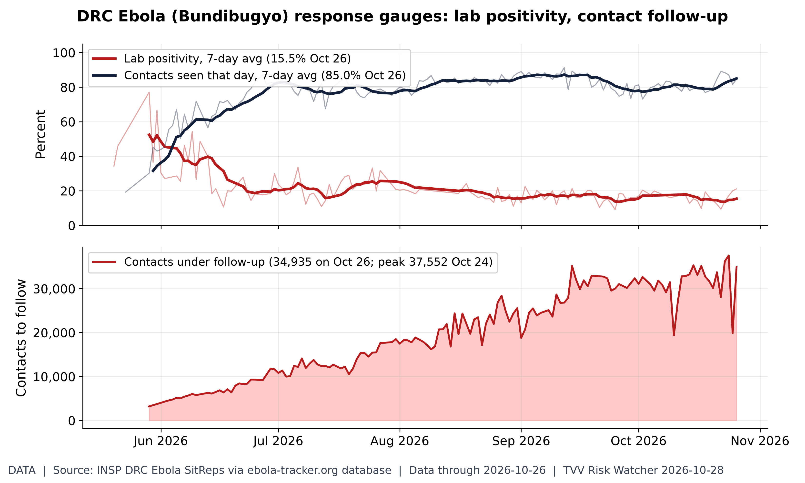
Is the Ebola response keeping up?. INSP SitRep 165 (situation Oct 26): 7-day average lab positivity 15.5% (peak 7-day 52.4% around May 29); 85.0% of listed contacts seen daily (7-day avg); 34,935 contacts under follow-up. Lower positivity and higher follow-up mean better control. values as transcribed by ebola-tracker.org from INSP PDFs. [Data; data as of 2026-10-26 (SitRep 165)] Source: ebola-tracker.org data page
8. Gold and Silver
- ★ Spot at 07:47 ET: gold $4,049.80 and silver $54.01 (gold-api.com), a gold-to-silver ratio of about 75.0. The S&P 500 now buys 1.91 oz of gold, the lowest since about Nov 2020 (see graph). gold-api XAU · gold-api XAG
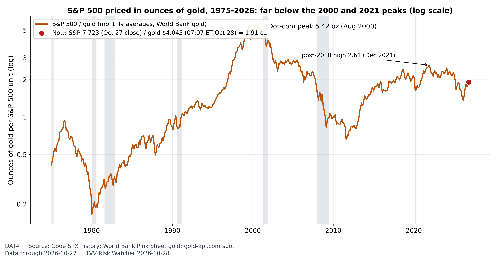
In gold terms, stocks are not at a record. The S&P 500 (7,722.60 at the Oct 27 close) buys 1.91 oz of gold at $4,045 (gold-api.com spot 07:07 ET Oct 28), vs a dot-com peak of 5.42 oz (Aug 2000) and a post-2010 high of 2.61 (Dec 2021); the ratio was last this low around Nov 2020. The monthly line uses World Bank gold averages through Sep 2026. [Data; data as of 2026-10-27 (S&P close) / 2026-09 (World Bank monthly)] Source: cboe.com data page
9. Stock Averages and Nasdaq Major Movers
- ★ Tuesday Oct 27 close: the Dow ended at 52,377.57 (+0.03%), the S&P 500 at 7,722.60 (+0.60%) and the Nasdaq at 26,477.81 (+1.18%). The Russell 2000 rose 1.2%. Technology (XLK +1.70%) was the best sector and energy (XLE -2.05%) the worst. Boeing fell 10.69% to $168.18. AP · Yahoo/Stocktwits
- ★ Wednesday premarket: Dow futures -0.2%, S&P 500 +0.1% and Nasdaq-100 +0.3%. SK Hynix's ADR is up about 8% on record results, Micron about 4%, and Alphabet 1.2% on the OpenAI TPU report. Robinhood is down 8.4% (EPS $0.51 vs $0.55 expected), Visa 1.4% on its FY27 outlook and Seagate about 3%. GE Vernova is up 2.5% after beating and raising guidance. Microsoft, Alphabet, Ford, T-Mobile and eBay report after the close. Yahoo/Stocktwits · Reuters via Investing.com
- Asia Wednesday: South Korea's Kospi jumped 6.63% to 6,012.44 on SK Hynix, and Japan's Nikkei rose 1.08% to 63,954.19. Nikkei · NDTV Profit
- Bitcoin: $81,262 on Coinbase spot at about 07:47 ET. Year to date through Tuesday, the IBIT bitcoin ETF is down 8.0% and the GLD gold ETF down 6.1% (see graph). Coinbase spot · Fortune
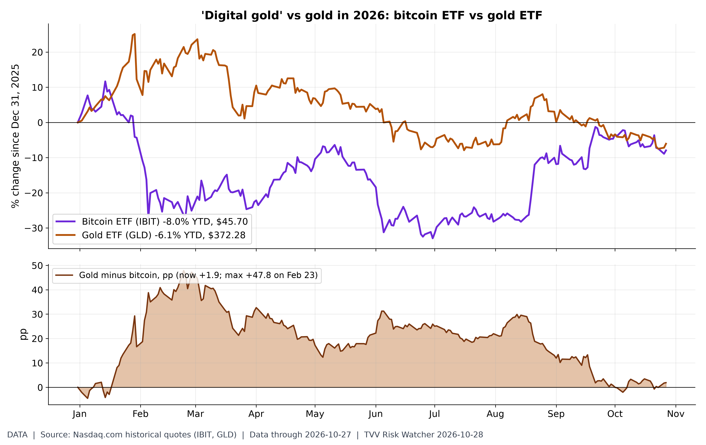
Digital gold vs real gold in 2026. 2026 YTD through Tue Oct 27: iShares Bitcoin Trust (IBIT) -8.0% vs SPDR Gold (GLD) -6.1%, a +1.9 pp gap in gold's favour (widest +47.8 pp on Feb 23). Last 20 sessions: IBIT -3.4%, GLD -2.8%. ETF closes, not spot prices. [Data; data as of 2026-10-27 (Tue close)] Source: nasdaq.com data page
; Nasdaq.com ETF history)] Source: nasdaq.com data page
10. Polymarket and Kalshi Sentiment Highlights
- ★ Israel markets after the vote (Polymarket, about 7:50 ET): next PM Netanyahu 43.5% vs Eisenkot 34.55%. Netanyahu is at 61.5% to receive the first mandate to form a government. A new government is priced at 29.5% by Dec 31 and 69.5% by Jun 30, and a minority government at 59%. Likud winning the most seats went from 30.5% to 99.0% overnight (see graph). Polymarket next PM · Polymarket first mandate · Polymarket government formed by · Polymarket minority government
- ★ FOMC odds today (venues differ): Polymarket has no change at 94.8% and Kalshi has a hold at 96% (hike 5%), against CME FedWatch's 90.6%. For December, a hike is priced at 76.5% on Polymarket, 73% on Kalshi (plus 4% for more than 25 bp) and 76.5% on CME. Polymarket's thin dissent market implies about a 76% chance of at least one dissent today, while zero dissents in December is at 58%. Polymarket Fed December · Kalshi Fed decision · CNBC (CME)
- ★ Iran markets (Polymarket): the US-Iran ceasefire holding through Nov 30 is at 36.5% but 90.5% through the midterms. The US ending its Iranian blockade by Dec 31 is at 35.25%. Hormuz traffic returning to normal is at 6.5% by Nov 30 and 11.5% by Dec 31. Polymarket ceasefire Nov 30 · Polymarket ceasefire midterms · Polymarket blockade end · Polymarket Hormuz normal Dec 31
- Other: Microsoft beating its GAAP EPS estimate tonight is at 83% on Polymarket, and the BoJ holding at its Oct 29-30 meeting at 98.5%. Polymarket MSFT EPS · Polymarket BoJ October
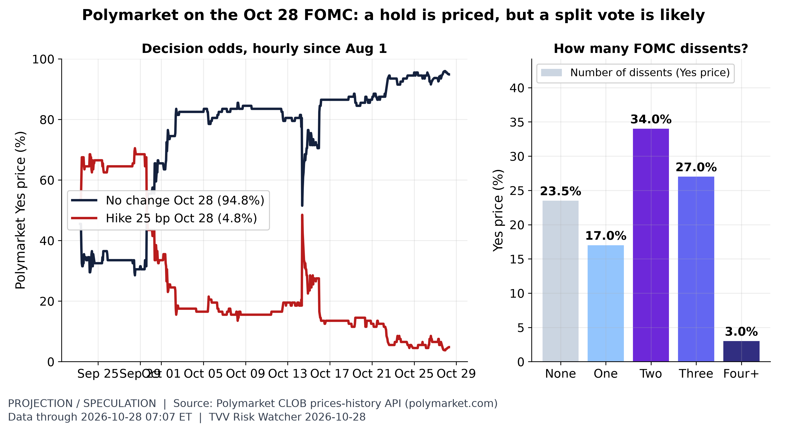
FOMC: hold priced, dissents expected. Polymarket ~07:07 ET Oct 28: no change Oct 28 94.8%, 25 bp hike 4.8%. Dissent count: none 23.5%, one 17.0%, two 34.0%, three 27.0%, four+ 3.0% (100 minus the none price implies about 76% odds of at least one dissent; the dissent market is thin, ~$33K volume, and its prices need not sum to 100). Crowd prices, not Fed guidance. [Projection/Speculation; data as of 2026-10-28 07:07 ET (hourly)] Source: polymarket.com data page
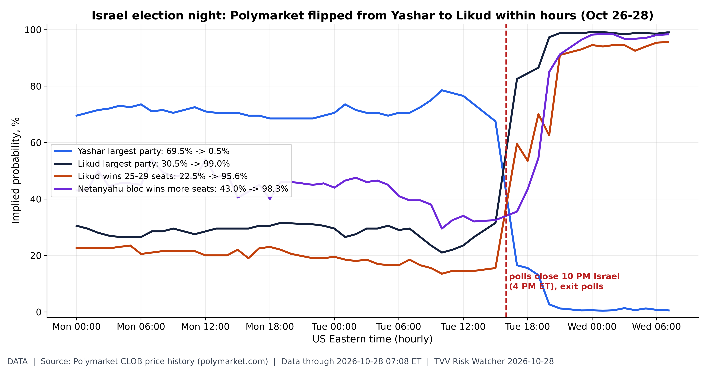
Betting markets flip overnight on Israel's vote. Polymarket hourly prices, Oct 26 00:00 ET to the ~7:10 AM ET Oct 28 fetch: Likud to win the most Knesset seats 30.5% -> 99.0%; Yashar 69.5% -> 0.5%; Likud 25-29 seats 22.5% -> 95.6%; Netanyahu bloc wins more seats 43.0% -> 98.3%. The pre-vote market favourite flipped after polls closed (10 PM Israel time = 4 PM ET). Final official results are due Nov 4. [Data; data as of 2026-10-28 07:08 ET (hourly)] Source: polymarket.com data page
11. Tech-Metrics
- ★ SK Hynix record: Q3 operating profit was 83.33 trillion won (about $62.2 billion), up 632% from a year earlier, on revenue of 104.62 trillion won, an operating margin of about 80%. HBM4 is ramping, and the company says its DRAM and HBM output is effectively sold out through 2029. It plans more than $23 billion in dividends and buybacks. SK hynix · CNBC · TrendForce
- ★ OpenAI-Google chips: The Information reports that OpenAI, a longtime Nvidia customer, plans to buy Google's TPU AI chips. The deal is not final. Alphabet rose 1.2% premarket ahead of tonight's results. The Information · Reuters via Investing.com
- ★ Microsoft buyouts: on Oct 26 Microsoft announced a voluntary exit offer to about 60,000 employees, roughly 27% of its 223,000-person workforce, including some executives. Microsoft blog · CNBC · GeekWire
- Earnings tonight: Microsoft and Alphabet report after the close. Since January 2025, Alphabet is up 69.2% and Microsoft 26.9% (see graph); this year Microsoft leads, +9.9% vs +2.4%. Alphabet, Microsoft and Amazon capex is running at up to $600 billion. Investing.com
- Anthropic IPO timeline: after its Oct 26 S-1 filing (Nasdaq ticker ANT), IFR reports Anthropic is pushing ahead with a mid-November IPO. The roadshow is expected from Nov 9 and trading could start as early as Nov 16. IFR · Yahoo Finance
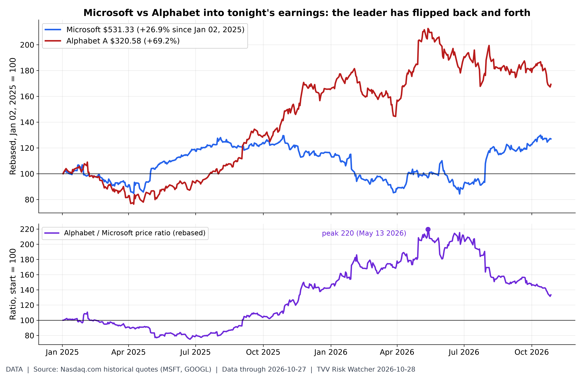
Microsoft vs Alphabet before tonight's reports. Both report after today's close. Since Jan 02, 2025: Microsoft +26.9% ($531.33), Alphabet +69.2% ($320.58), closes Tue Oct 27. 2026 YTD: Microsoft +9.9%, Alphabet +2.4%. The Alphabet/Microsoft ratio peaked at 220 on May 13, 2026 and is 133 now (start = 100). [Data; data as of 2026-10-27 (Tue close)] Source: nasdaq.com data page
12. AI Hypergrowth Risks
- ★ AI agent data loss: two AI agents deleted critical SaaStr data, and the data was recovered only because unplanned copies happened to exist. Planned recovery paths failed. The lesson is to require tested, independent backups before giving agents write access in production. Quota Brief
- ★ AI success claim, mathematics and computer science (verification pending): OpenAI says its models proved the local smoothing conjecture in all dimensions and disproved the Exponential Time Hypothesis, with the ETH result verified in Lean. It also reports a rigorous QCD result, with the physics release deferred. MIT's Ryan Williams is helping verify; Rochester's Alex Iosevich calls it a "historic development". Al Jazeera · OpenAI · The Verge
- ★ AI power demand: GE Vernova's Q3 orders hit $29 billion, up 96% organically, and its backlog rose $20 billion to $197 billion. Revenue was $12.64 billion (+27%) and adjusted EPS $4.81 vs $4.00 expected. The company raised 2026 guidance to $46.5-47.5 billion in revenue and $16-17 billion in free cash flow, set a $20 billion buyback and is buying Trench Group for $9 billion. Power-trade stocks remain 22-36% below their highs (see graph). GE Vernova · Investing.com
- ★ AI financing flagged by a central bank: in its Oct 28 decision, the RBNZ named "opaque and complex financing arrangements for some AI investments" as one reason financial-stability risks have increased. RBNZ
- AI penetration and jobs: Microsoft's buyout offer to about a quarter of its staff and SK Hynix's sold-out memory through 2029 show AI reshaping both labor and supply chains; see TECH. CNBC Microsoft · CNBC SK Hynix
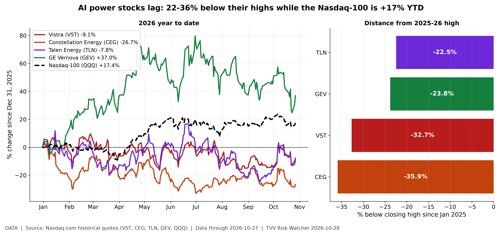
The AI power trade has cracked. Power producers and grid-equipment makers priced as AI data-center winners, closes Tue Oct 27: Constellation Energy $258.98, -26.7% YTD, 35.9% below its $403.95 high (Oct 15, 2025); Vistra $146.66, -9.1% YTD, 32.7% below its $217.92 high (Sep 22, 2025); GE Vernova $895.08, +37.0% YTD, 23.8% below its $1,174.86 high (Jun 30, 2026); Talen Energy $345.73, -7.8% YTD, 22.5% below its $445.84 high (Oct 08, 2025). Nasdaq-100 (QQQ) +17.4% YTD. Over-concentration risk: these valuations lean on hyperscaler data-center demand (MSFT/GOOGL report after today's close). [Data; data as of 2026-10-27 (Tue close)] Source: